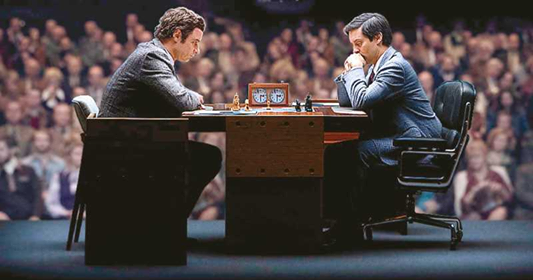

Reseña por: Luna Valle Juan Manuel
La historia de Bobby Fisher es compleja, no sólo por haber obtenido el título máximo del ajedrez mundial al vencer al soviético Borís Spassky. Sus antecedentes familiares y el medio en que vivió lo condujeron al hacinamiento, completamente obsesionado por el ajedrez. Su madre, intentando desalentarlo, le presentó al maestro Carmine Nigro, quien más que evitar que continuará esa ruta, se convirtió en su mentor y lo introdujo al mundo del ajedrez de competición. Tiempo después, madre e hijo se separaron, y él continuó enfocado en el ajedrez. Incluso en su edad adulta, cuando se repitió el encuentro entre estos dos grandes ajedrecistas en la República Federal de Yugoslavia en un encuentro de exhibición, razón por la que fue solicitado por las autoridades norteamericanas -en ese entonces se estaban imponiendo fuertes restricciones en el comercio a esta nación por su participación en la guerra de Bosnia-. Después de su detención en Japón por contar con un pasaporte invalidado por el gobierno de los EEUU, obtuvo la ciudadanía islandesa por un gesto de buena voluntad de esta nación, fue trasladado y residió en Reikiavik hasta el día de su muerte a los 64 años a causa de una enfermedad renal. Todo lo que les he mencionado es sólo un pequeño extracto de su vida, y no contiene la información más interesante de su carrera. Y justamente esto es La Jugada Maestra, una película que nos muestra el ascenso de toda una figura en el mundo del ajedrez.
Bobby Fisher, interpretado por Aiden Lovekamp en su infancia, nos va mostrando poco a poco sus nacientes paranoias y obsesiones; paranoias que probablemente fueron provocadas por el mundo en que se desenvolvía su madre, Regina Wender Robin Weigert, una enfermera suiza inteligente y políglota, y su obsesión más importante, el jugar ajedrez -tal vez para mantener su mente ocupada-. Ella busca desanimarlo, al perder contra el maestro Carmine Nigro Conrad Pla, pero sólo consigue interesarlo más porque podía aprender de sus derrotas. Y el sigue esta ruta hasta el momento en que, ya en la adolescencia interpretado por Seamus Davey-Fitzpatrick, le exige a su madre que se vaya de la casa pues interfiere en su crecimiento personal.
Ya en su mayoría de edad, Bobby Tobey Maguire es famoso en el medio y se encuentra con el que será su representante personal, Paul Marshall Michael Stuhlbarg, y con quien sirvió en parte de apoyo psicológico, el padre Bill Lombardy Peter Sarsgaard. Y así es como se configura el elenco central de esta película, al cual deberemos agregar a Liev Schreiber, que hace el papel de Borís Spassky.
La cinta no es precisamente una biopic, sino que nos da unos rápidos antecedentes para tratar de entender al complejo Bobby Fisher, que veremos complejizarse aún más conforme avance la cinta. El guión, aunque parece ser bastante fiel a la realidad, cae en algunos equívocos. Por ejemplo, Paul Marshall argumenta que es promotor de Jimi Hendrix y The Rolling Stones, pero en 1965 Hendrix aún no había surgido en la escena musical lo haría hasta el año siguiente, en Inglaterra; y sobre este mismo personaje, al final de la cinta se menciona que se había suicidado, cuando en realidad murió de un ataque al corazón. Lo peor de todo son las escenas de competición contra Borís Spassky, porque es bien sabido que es contra las reglas incomodar al competidor o dirigirse directamente a él, si no es para sugerir un empate, y tenemos un varios errores que sugieren que los jugadores tomaron actitudes estrafalarias mientras se realizaban las jugadas.
Más allá de los errores del guión, que finalmente son representados en cámara por los actores, me parece que la película cumple con mostrarnos un vistazo a Bobby Fisher y el juego del siglo. La actuación ha sido, desde mi punto de vista, la más apropiada, destacando Seamus Davey-Fitzpatrick como el adolescente, y Tobey Maguire como el adulto. Además, Peter Sarsgaard interpreta muy bien al sacerdote que acompaña a Fisher no por consuelo espiritual, sino porque Lombardy también fue un gran ajedrecista, alumno de John Collins, el segundo tutor de Fisher.
Desde el punto de vista escenográfico, se hizo un trabajo formidable, recreando los ambientes de los años 50, 60 y 70. Incluso la musicalización fue correcta, porque escuchamos canciones de cada una de dichas épocas, y nos suenas como bien ubicadas en las escenas adecuadas.
